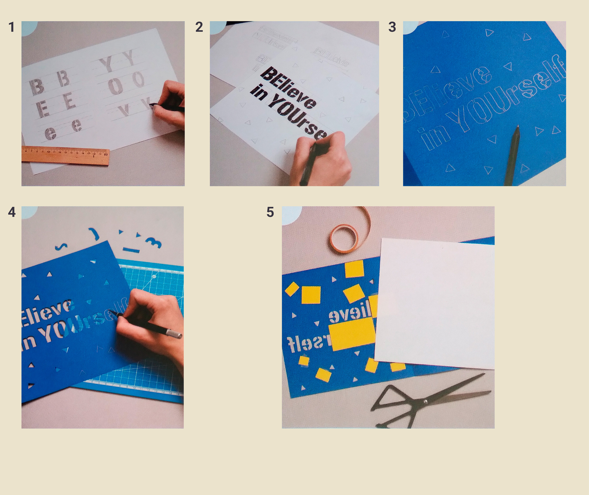

• Lápiz y rotulador negro
• Pegamento en barra
• Regla
• Tijeras
• Cúter y cuchillo craft
• Soporte de corte
• Troqueladora
• Folios blancos y colores
La letra tipo stencil se caracteriza por ser una forma recortada con uniones en el interior de la letra para conservar las partes internas.
1. Estilo de letra
Empieza diseñando un tipo de letra que te permita recortar cada una a modo de stencil sin perder ninguna parte. Para que te sea más fácil recortarlos posteriormente, haz letras sin serifa y rectas. Para ello, dibuja en un folio con lápiz y regla letras en mayúscula y minúscula de manera que la parte interna quede unida a la forma. Usa unas líneas guía para obtener más precisión de proporciones.
2. Boceto
Una vez obtengas las letras que más te gusten, boceta diferentes estructuras en miniatura con el mensaje que hayas escogido. Encájalo todo en un formato cuadrado de 21 x 21 cm para dibujar el diseño a escala real. Para observar bien la composición, recuerda pintar el interior de las letras con un rotulador para valorar el peso y el contraste.
3. Diseño
Recorta con las tijeras un rectángulo de 21 x 42 cm en un folio coloreado y pliégalo por la mitad. En la parte derecha, dibuja con un lápiz la composición definitiva de tu lettering. En este caso, no es necesario que pintes el interior de cada letra, solo el contorno.
4. Recorta
Con un cúter y un cuchillo craft, siluetea, sobre un soporte de corte, cada letra con cuidado. Estos recortes deben ser muy precisos. Además, puedes hacer decoraciones en el resto de la superficie del papel a mano o con la ayuda de una troqueladora de papel. Después recorta con las tijeras un segundo rectángulo de 21 x 42 cm sobre un folio de color blanco y pliégalo por la mitad.
5. Rellena
Para acabar, recorta diferentes trozos de papel de otro color y pégalos a modo de parche en la parte posterior con pegamento en barra rellenando el interior de cada palabra. Puedes hacer lo mismo con las decoraciones. Finalmente, pega el rectángulo blanco en el interior de la postal para que los parches de papel queden ocultos y puedas escribir una dedicatoria.
